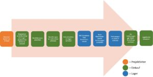
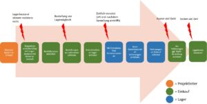
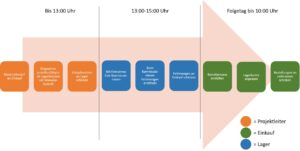

Teure Nachbestellungen abgestellt
In diesem kurzen Praxisbeispiel zeige ich dir, wie mein Kunde und ich einfach und investitionsfrei ein Problem mit zu vielen Nachbestellungen gelöst haben.
Vor Kurzem gab es bei einem Kunden folgendes Problem: Nachdem eine Bestellung für einen bestimmten Auftrag beim Kunden eingeht wird das Material kommissioniert. Doch dabei kommt es bei über 60 % der Fälle vor, dass das Material nicht ausreicht. Das führt zu teuren Express-Nachbestellungen.
Bevor ich über die Lösung des Problems spreche, kurz drei Sätze, wie es zu einer Bestellung kommt. Ein Auftrag löst einen Materialbedarf aus. Die Bestellmenge ergibt sich aus der Differenz aus Lagerbestand und Materialbedarf. Ist das Ergebnis negativ, wird eine Bestellung ausgelöst.
Alter Bestellprozess
Jetzt zur eigentlichen Arbeit. Aus den Befragungen vor Ort ergibt sich ein erstes Bild über den aktuellen Prozess:

- Zunächst generieren die Projektleiter einen Materialbedarf aus ihrem Konstruktionsprogramm.
- Diese Liste übergeben sie dem Einkauf. Dieser stößt die Disposition an (Mit dem Ergebnis, was bestellt und was aus dem Lager entnommen wird).
- Danach geht die notwendige Bestellmenge an die Lieferanten raus und eine Entnahmeliste geht an das Lager.
- Der/Die Lagerist*in entnimmt anschließend die bereits im Lager vorhandenen Materialien für den Auftrag und führt sie auf der für den Auftrag vorgesehenen Fläche zusammen. Dabei wird der im System hinterlegte Soll-Bestand mit dem tatsächlichen Ist-Bestand abgeglichen.
- Das Lager meldet Abweichungen dem Einkauf.
- Der Einkauf passt daraufhin das Lagerkonto an und führt eine Nachbestellung durch, falls zu wenig Material im Lager war.
Problemsuche
In einer perfekten Welt würde es nicht zu vielen Nachbestellungen kommen. Doch es gibt keine perfekte Welt. Deshalb hier eine Auswahl der identifizierten Probleme:

Problem 1: Der Lagerbestand stimmt nicht. Der Bestellprozess ist auf einen korrekten Lagerbestand angewiesen. Ist der tatsächliche Lagerbestand größer als der systemische, ist das Ergebnis der Disposition eine unnötige Bestellung. Ist der tatsächliche Lagerbestand kleiner als der systemische, ist das Ergebnis eine mengenmäßig zu kleine Bestellung.
Problem 2: Die Bestellung geht nach der Disposition direkt an die Lieferanten raus. Bei einem falschen Lagerbestand ist das Kind an dieser Selle sprichwörtlich bereits in den Brunnen gefallen. Selbst wenn dem Lager eine unendlich kleine Zeit später der Fehlbestand auffällt, hätte der Einkauf bereits die falsche Bestellung getätigt. Allerdings wäre eine Änderung der Bestellung noch möglich und eine Express-Bestellung nicht notwendig.
Problem 3: Doch es kommt ein weiteres Problem hinzu. Lagerseitig erfolgt die Kommissionierung und der damit einhergehende Abgleich des Lagerbestands erst 4-9 Arbeitstage nach dem Eingang der Entnahmeliste. Folglich fällt eine Fehlmenge meistens erst auf, während die Produktion das Material bereits benötigt.
Problem 4: Zusätzlich führt die späte Kommissionierung zu einer großen Zeitspanne, in der Mitarbeitende sich Material für ihren Auftrag entnehmen könnten, welches für einen anderen Auftrag vorgesehen, aber noch nicht kommissioniert wurde. Mit anderen Worten: Selbst wenn der Lagerbestand zum Zeitpunkt der Bestellung stimmte, kann es trotzdem zu Nachbestellungen kommen.
Das Ergebnis von den genannten Problemen ist eine Express-Nachbestellung nach der anderen.
Neuer Bestellprozess
Mit Hilfe separater Befragungen von Lager und Einkauf inklusive Prozessvisualisierungen konnten wir einen guten Überblick über den Ist-Zustand bekommen. Anschließend wurden die Ansichten beider Parteien gegenübergestellt und gemeinsam ein Soll-Prozess entwickelt.

Das generelle Problem mit falschen Lagerbeständen ist nach wie vor vorhanden, aber der neue Bestellprozess ist darauf nicht mehr angewiesen.
Die Bestellung an Lieferanten erfolgt jetzt nach der Kommissionierung und dem Lagerabgleich. Damit ist zum einen der Lagerbestand zum Zeitpunkt der Bestellung bereits überprüft und korrekt, zum anderen sind die Lagerentnahmen bereits vollzogen und das Material für den vorgesehenen Auftrag zusammengestellt. Entnahmen von für andere Aufträge vorgesehenes Material haben wir so vorgesorgt.
Einhergehend mit der Umstrukturierung der Prozessschritte wurde ein Zeitplan eingeführt. Die Projektleiter schicken die Entnahmeliste bis 13 Uhr an das Lager, welches dann einen zweistündigen Block zum Kommissionieren hat. Die ermittelten Fehlmengen schickt das Lager am Ende des Blocks an den Einkauf, welcher dann am nächsten Morgen das Lagerkonto anpasst, bevor er die korrekte Menge an Material bestellt.
Teure Express-Nachbestellungen haben wir so mit einfachsten Mitteln erfolgreich abgestellt.
Weitere Informationen zum Thema Logistik und wie wir Lagersysteme ohne Lagerkonto-Pflege erreichen, erfährst du hier.
Weitere Artikel

Regeln für KI im Office
ChatGPT & Co haben sich schnell in die Herzen und Alltag von vielen Menschen im Berufs- und Privatleben gespielt. Diese neuen Werkzeuge eröffnen uns viele Chancen, nicht nur effizienter zu werden, sondern auch kreativer. Aber …

Digitale Tools für Zusammenarbeit im Office
E-Mail, Digitale Ablage und eine Branchensoftware sind schon lange nicht mehr genug für effiziente Zusammenarbeit. Doch bevor Sie sich in einem Dschungel an digitalen Werkzeugen verlieren, sollten Sie sich über die Systematik …